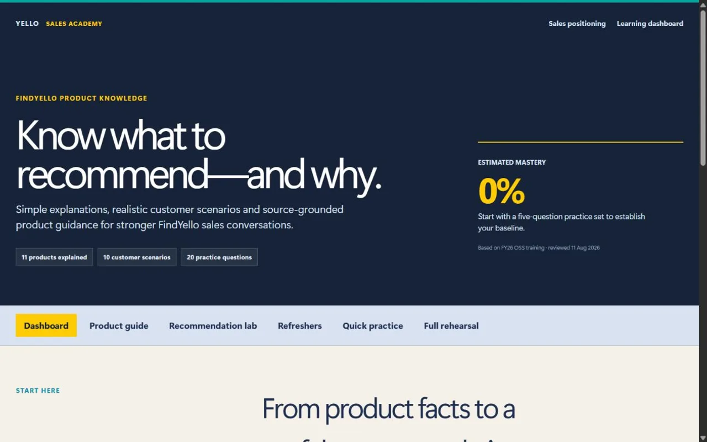

Films, graphics and websites.
I can shoot your launch film, design the posts and build the page people land on when they tap.
What I can make
- Campaign concepts, photography, films, interviews and audio
- Graphics, AI-assisted animation, websites and landing pages
- Marketing foundations, practical AI training and tools for repeat tasks
- Interactive lessons, journals and workbooks
AI video & animation
Four reels for Yello.
At Yello Media Group, I used Higgsfield to make short films about everything from finding AC repairs to explaining El Niño.
See the Yello project-
 Finding AC repairFull reel on Instagram (opens in a new tab)
Finding AC repairFull reel on Instagram (opens in a new tab)
-
 El Niño explainerFull reel on Instagram (opens in a new tab)
El Niño explainerFull reel on Instagram (opens in a new tab)
- Sir Garfield Sobers tributeFull reel on Instagram (opens in a new tab)
- Eye-care service discoveryFull reel on Instagram (opens in a new tab)
Planning an AI video
I can storyboard an idea, try a visual style or animate a short social film. We agree on the brief, tools and review points before production.
What are you working on?
Give customers a way to enquire.


I can build a new site or review the one you already have. We’ll look at what a customer needs to do when they get there.
How the enquiry works
Your business information is organised into a clear website with a route to ask a question or make an enquiry.
- Your business
- A clear website
- An enquiry route
Need Meta or Google Ads? I quote advertising separately.
Give your team a place to practise.

I designed the learning structure and interface for this sales academy. Staff can explore a product guide, try a customer scenario and check their answer.
How I build a lesson
Existing notes are organised into a lesson. A learner explores a scenario, chooses an answer and receives feedback. The illustration describes the creation process, rather than a measured training outcome.
- Your material
- A clear lesson
- Practice & feedback
Bring a task you repeat.
Plant fair
Saturday
Free entry
plant fair.
We’ll use your team’s tools to draft something, check it against the brief and practise the steps together.
How the session works
Bring a real work task, practise with guidance and take away an approach you can use again, with human checking and judgement.
- Your task
- Guided practice
- A reusable approach
Custom journals and workbooks.
Send me the notes or slides you use in your workshop. I can turn them into a workbook people can write in, a guided journal or a digital resource they can keep.
What we agree before I start
We’ll go through who it’s for, what goes on the pages and which files you need. I’ll quote for that work before we begin.
Bring the idea or the brief.
We can shape the right format, deliverables and route to your audience.